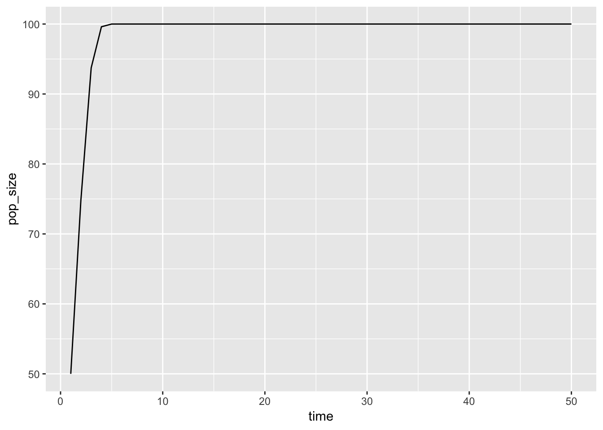
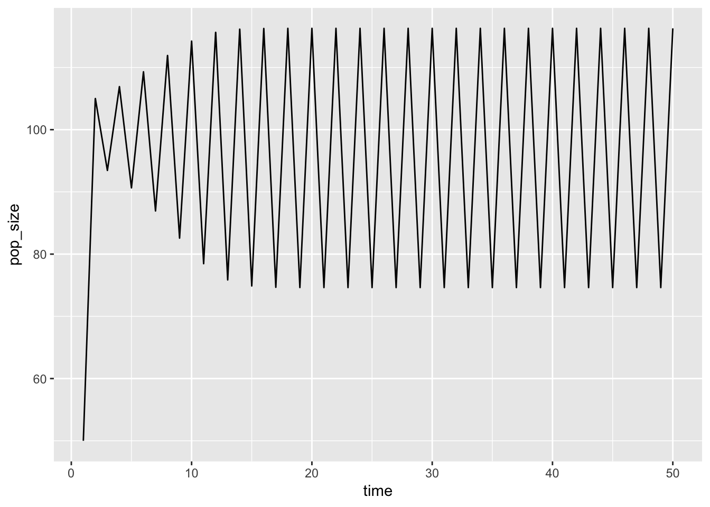
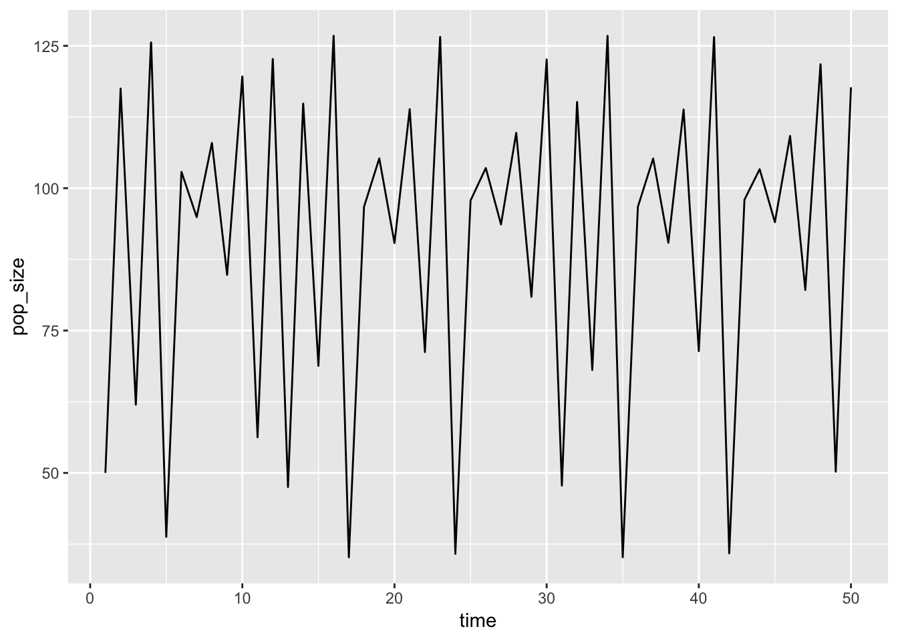
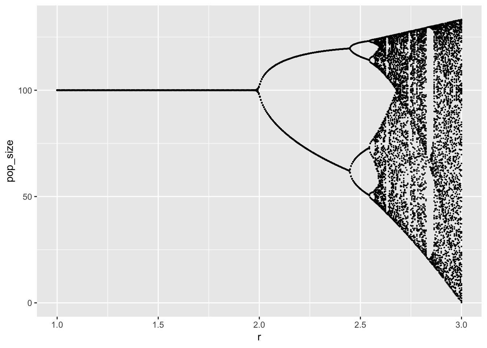

Writing functions in R
library(tidyverse)Today we will be learning to write our own functions in R. Consider the discrete Logistic growth function:
\[x_{t+1} = x_t + r x_t \left(1 - \frac{x_t}{K} \right)\]
Here we exress this function in R:
growth <- function(xt, r, K){
r * xt * (1 - xt / K)
}We can simulate the function as follows:
simulate <- function(max_time, x0, r, K){
x <- numeric(max_time)
x[1] <- x0
for (t in 1:(max_time - 1)) {
x[t + 1] <- x[t] + growth(x[t], r = r, K)
}
pop_data <- data_frame(time = 1:max_time, pop_size = x)
pop_data
}We can perform a few simulations with different values of r:
simulate(50, 50, 1, 100) %>%
ggplot(aes(time, pop_size)) + geom_line()
simulate(50, 50, 2.2, 100) %>%
ggplot(aes(time, pop_size)) + geom_line()
simulate(50, 50, 2.7, 100) %>%
ggplot(aes(time, pop_size)) + geom_line()
Wow, things get pretty crazy as r gets large. Let’s try and get a more detailed picture of the long-term behavior of the system as a function of the r value:
## Try all these values of r
r_range <- seq(1,3, length.out = 400)
## An initial simulation.
df <- simulate(300, 10, r_range[1], 100) %>%
filter(time > 200) %>% # use only the long-term behavior
mutate(r = r_range[1]) # store the value of r that we used.
# Okay, now repeat this for all values of r:
for (r in r_range) {
df1 <- simulate(300, 10, r, 100) %>%
filter(time > 200) %>%
mutate(r = r)
## technical note: this could be slow for really big data, technically we should "initialize" this first.
## Instead, we'll later learn how to automate that with functional programming.
df <- bind_rows(df, df1)
}Let’s plot the results showing the equilibrium population size(s) as a function of the value of r we chose:
df %>%
ggplot(aes(r, pop_size)) +
geom_point(size = 0.1)